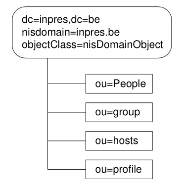

Pour mettre en oeuvre une authentification LDAP sur un système Solaris, il faut configurer les modules NSS (Name Service Switch) et PAM (Pluggable Authentication Module).
Le mécanisme NSS permet de définir les sources de données pour les différentes bases de données du système d’exploitation. Ainsi, il est possible de demander au système de rechercher les noms de machines dans le fichier /etc/hosts, ensuite dans un service DNS et enfin dans un annuaire LDAP. Les sources ainsi que leur ordre d’utilisation sont spécifiées dans le fichier /etc/nsswitch.conf.
passwd: files
group: files
hosts: files dns ldap
Chaque entrée du fichier nsswitch.conf correspond à une base de données système (passwd, hosts...). Le démon nscd (Naming Service Cache Demon) est chargé de mettre en cache les informations des bases de données pour les requêtes du service nommage. Le script /etc/init.d/nscd permet de lancer ou d’arrêter le démon.
Pour pouvoir employer LDAP comme source d’information pour alimenter les bases de données système, les données doivent être stockées dans des conteneurs. Un conteneur est une entrée dans l’arborescence de l’annuaire, prévue pour un type d’information. Le tableau 3.1 reprend les bases de données, le type des objets et le conteneur associé.
| base de données | classe d'objet | conteneur |
|---|---|---|
| passwd | posixAccount, shadowAccount | ou=People,dc=... |
| group | posixGroup | ou=group,dc=... |
| hosts | ipHost | ou=hosts,dc=... |
Tab. 3.1 – Conteneurs pour le service de nommage
Par défaut, le client Solaris s’attend à trouver les informations des bases de données sous les entrées spécifiées dans le tableau 3.1. Par conséquent, le DIT du serveur doit posséder la structure présentée ci-dessous.

Fig. 3.3 – DIT attendu par le client Solaris
Le fichier LDIF correspondant à la figure 3.3 se trouve en Annexe. Une fois que le serveur possède les conteneurs nécessaires, le client Solaris peut être configuré pour utiliser LDAP comme entrepôt pour les bases de données système. Le fichier /etc/nsswitch.ldap fournit une configuration par défaut pour utiliser LDAP avec NSS. Il suffit de copier le fichier nsswitch.ldap sous /etc/nsswitch.conf pour que le client Solaris possède une configuration NSS par défaut.
cp /etc/nsswitch.ldap /etc/nsswitch.conf
cat /etc/nsswitch.conf
#
# /etc/nsswitch.ldap:
#
passwd: files ldap
group: files ldap
# consult /etc "files" only if ldap is down.
hosts: ldap [NOTFOUND=return] files
La commande ldapaddent permet de créer des entrées dans les conteneurs LDAP à partir des fichiers /etc correspondants.
ldapaddent -c -D cn=root,dc=inpres,dc=be -a simple -f /etc/passwd passwd
ldapaddent -c -D cn=root,dc=inpres,dc=be -a simple -f /etc/shadow shadow
En exécutant ces commandes, tous les comptes locaux seront dupliqués dans l’annuaire y compris le compte root. Il est donc plus prudent de copier les comptes pouvant migrer vers l’annuaire dans des fichiers temporaires le temps de les passer à la commande ldapaddent. L’ordre d’execution des commandes est important car les entrées posixAccount (représentant une entrée du fichier /etc/passwd) doivent exister avant d’ajouter les entrées du fichier /etc/shadow.
Les quelques tests qui suivent permettront de s’assurer que le service de nommage des mots de passe et des groupes fonctionne correctement.
La commande ldaplist déjà utilisée au chapitre 2, permet de lister les informations de nommage stockées sur un serveur LDAP.
ldaplist passwd
dn: uid=laurent,ou=People,dc=inpres,dc=be
La commande getent affiche les entrées d’une base de données dont les sources sont spécifiées dans le fichier /etc/nsswitch.conf. Dans l’exemple suivant, les utilisateurs LDAP devraient apparaître en fin de liste.
getent passwd
La commande id doit pouvoir retourner l’identifiant et le groupe d’un utilisateur ldap.
id laurent
uid=10000(laurent) gid=10005(ldap)
Si un de ces tests échoue, les démons nscd et ldap_cahchemgr doivent être redémarrés afin de prendre en compte les modifications effectuées dans le fichier /etc/nsswitch.conf.
/etc/init.d/nscd stop
/etc/init.d/ldap_cachemgr stop
/etc/init.d/nscd start
/etc/init.d/ldap_cachemgr start
Les modules PAM (Pluggable Authentication Module) permettent de construire des mécanismes d’authentification indépendants des services (login, telnet, passwd...) fournis par le système. L’architecture PAM est constituée de bibliothèques et de modules d’authentification :
la bibliothèque PAM constitue la couche API entre l’application et le système.
les modules d’authentification sont des objets invoqués par l’API PAM pour fournir un mécanisme d’authentification particulier à un service.
Un module PAM peut offrir une ou plusieurs fonctionnalités :
Chaque service est configuré en connectant plusieurs modules les uns aux autres. Quand un service fait une demande d’authentification, les modules qui lui sont associés sont appelés dans l’ordre. Si tous les modules approuvent la tentative d’authentification, une réponse positive est retournée au service qui peut poursuivre son exécution. Dans le cas contraire, un message d’erreur est renvoyé au service. De nouveaux modules PAM peuvent être ajoutés au mécanisme d’authentification sans modifier l’application.
Le fichier pam.conf contient la configuration des modules PAM pour les différents services. Le format du fichier est le suivant :
nom_du_service type_du_module flag module options
Les types de module valables sont auth, account, session et password. Les flags définissent le comportement du module quand il réussit ou échoue dans sa tâche.
Les options utiles à l’authentification sont use_first_pass et try_first_pass. Le premier argument demande au module d’utiliser le mot de passe fournit au module précédent. Tandis que l’argument try_first_pass autorise le module à essayer le mot de passe du module précédent. Si l’authentification échoue, le module demande un nouveau mot de passe.
Dans le listing suivant, le service login est configuré pour utiliser quatre modules d’authentification. Les services qui ne sont pas spécifiés explicitement, utiliseront le mécanisme définit par le mot clé other.
# PAM configurtion
#
login auth requisite pam_authtok_get.so.1
login auth required pam_dhkeys.so.1
login auth required pam_unix_auth.so.1
login auth required pam_dial_auth.so.1
other auth requisite pam_authtok_get.so.1
other auth required pam_dhkeys.so.1
other auth required pam_unix_auth.so.1
other password required pam_dhkeys.so.1
other password requisite pam_authtok_get.so.1
other password requisite pam_authtok_check.so.1
other password required pam_authtok_store.so.1
Le module PAM employé pour utiliser LDAP comme mécanisme d’authentification est pam_ldap. Il offre un service d’authentification (auth) et une gestion du mot de passe (password). Le module pam_ldap doit être utilisé avec le module pam_unix (mécanisme traditionnel d’authentification UNIX).
# PAM configuration
#
# Default definitions for Authentication management
# Used when service name is not explicitly mentioned for authenctication
#
other auth requisite pam_authtok_get.so.1
other auth required pam_dhkeys.so.1
other auth sufficient pam_unix_auth.so.1
other auth required pam_ldap.so.1
#
# passwd command (explicit because of a different authentication module)
#
passwd auth sufficient pam_passwd_auth.so.1
passwd auth required pam_ldap.so.1
#
# Default definition for Password management
# Used when service name is not explicitly mentioned for password management
#
other password required pam_dhkeys.so.1
other password requisite pam_authtok_get.so.1
other password requisite pam_authtok_check.so.1
other password required pam_authtok_store.so.1
other password required pam_ldap.so.1 try_first_pass
Tous les services qui ne sont pas définis explicitement (mot clé other), sont maintenant configurés pour utiliser LDAP comme mécanisme d’authentification. Ainsi, quand un service demande au système d’authentifier un utilisateur, le module pam_ldap utilise l’identifiant et le mot de passe fournis par le service pour tenter de se connecter au serveur LDAP. Si l’authentification sur le serveur LDAP réussit, le module pam_ldap passe la main au module suivant. Si pam_ldap ne réussit pas à s’authentifier avec le nom de l’utilisateur comme DN, il retourne un message d’erreur et l’authentification pour le service échoue.
La configuration actuelle du client Solaris, réalisée au chapitre 2, ne permet pas au module pam_ldap d’effectuer l’authentification des utilisateurs LDAP. En effet, le client Solaris est configuré pour se connecter anonymement sur le serveur LDAP.
NS_LDAP_AUTH= none
NS_LDAP_CREDENTIAL_LEVEL= anonymous
Or, pour authentifier un utilisateur LDAP, le module pam_ldap réalise une authentification simple auprès du serveur. En d’autre terme, le module pam_ldap doit se connecter sur le serveur LDAP au moyen d’un DN (construit à partir du nom de l’utilisateur) et d’un mot de passe (fournit par l’utilisateur).
Le paramètre NS_LDAP_SERVICE_AUTH_METHOD du fichier (ldap_client_file permet de surcharger la méthode d’authentification définie par défaut (paramètre NS_LDAP_CREDENTIAL_LEVEL). L’exemple suivant montre comment modifier la configuration du client et mettre en place une authentification simple pour le module pam_ldap.
ldapclient -m -A "pam_ldap:simple"
ldapclient -l
NS_LDAP_AUTH= none
NS_LDAP_CREDENTIAL_LEVEL= anonymous
NS_LDAP_SERVICE_AUTH_METHOD= pam_ldap:simple
Pour que la nouvelle configuration soit prise en compte par le client LDAP, le démon nscd doit être redémarré. Mais avant, il faut recréer le fichier /etc/nsswitch.conf supprimé par la commande ldapclient.
cp /etc/nsswitch.ldap /etc/nsswitch.conf
/etc/init.d/nscd stop
/etc/init.d/nscd start
Il est important de remarquer que le module pam_unix n’est plus required mais sufficient. En effet, les utilisateurs locaux (fichier /etc/passwd et /etc/shadow) comme l’utilisateur root, doivent pouvoir continuer à se connecter au système sans authentification LDAP.
Les utilisateurs LDAP définis dans le conteneur People peuvent se connecter au système via telnet, rlogin, ftp ou encore ssh. Pour qu’un utilisateur puisse ouvrir une session graphique sans erreur, le répertoire de départ (home directory) de l’utilisateur LDAP doit exister et lui être accessible.
mkdir /home/laurent
chown laurent /home/laurent
chgrp ldap /home/laurent
Le démon dtlogin chargé de la gestion de l’invite de connection graphique est arrêté brutalement quand le système est configuré comme client LDAP. Le problème peut être résolut de deux façons :
Dans le fichier /etc/nsswitch.conf, remplacer l’entrée
hosts: ldap[NOTFOUND=return] files
par l’entrée suivante :
hosts: ldap files
La première entrée est la version par défaut définie dans le fichier /etc/nsswitch.ldap. Elle demande d’utiliser l’annuaire LDAP comme source pour la base de données hosts et le fichier files uniquement si le serveur LDAP est inaccessible. La deuxième version utilise LDAP et le fichier /etc/hosts pour la résolution des noms de machines.
Ajouter l’entrée ipHost représentant la machine sunray1v440 dans le conteneur Hosts de l’annuaire LDAP.
dn: cn=sunray1v440, ou=Hosts, dc=inpres,dc=be
ipHostNumber: 10.59.4.6
objectClass: ipHost
objectClass: device
objectClass: top
cn: sunray1v440
Les entrées du fichier /etc/hosts peuvent être envoyées dans l’annuaire LDAP à l’aide de la commande ldapaddent.
ldapaddent -D cn=root,dc=inpres,dc=be -a simple -f /etc/hosts hosts
Dans les deux cas, le processus dtlogin est redémarré au moyen du script /etc/init.d/dtlogin.
La configuration de la base hosts nécessite une attention particulière. En effet, dans le cas où DNS et LDAP sont consultés, la bibliothèque LDAP bloque sur la fonction gethostbyname()1 si elle ne peut pas résoudre le nom du serveur LDAP.
Afin s’assurer que la bibliothèque LDAP soit en mesure de résoudre le nom du serveur à tout moment, le nom du serveur doit être résolu à l’aide du fichier /etc/hosts. Dès lors, l’entrée hosts du fichier nsswitch.conf devient hosts: files et non hosts: dns ldap.
1 La fonction C gethostbyname() est utilisée par le système pour résoudre les noms de machine en adresse IP.